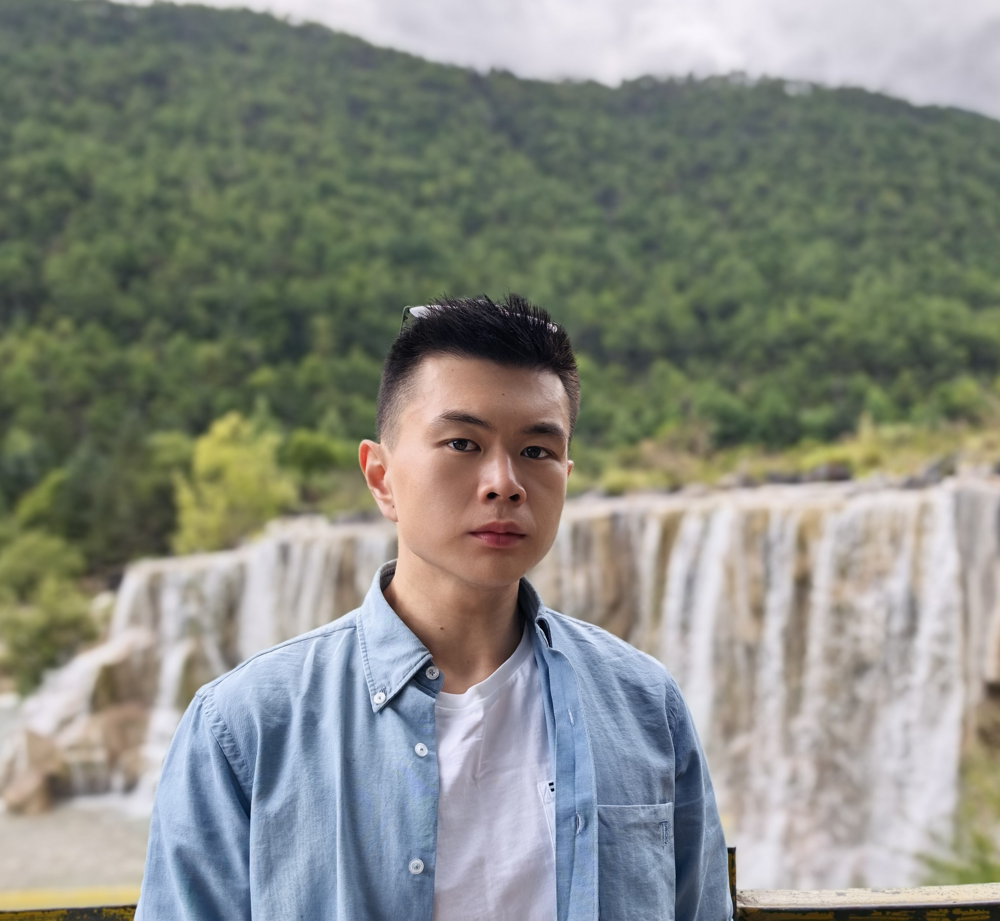

My name is Kaidi Pan (in Mandarin Chinese: 潘楷涤 /pʰanˉ/, /kʰaɪˇ/, /tiˊ/. Chinese is a tonal language, for atonal approximation: “Kai-Dee Pahn”)
I joined Yale Philosophy as a PhD student in 2023. Before that, I was an undergrad in Philosophy and Linguistics at the University of Chicago.
My research interests range quite broadly. I usually start with philosophy of language; from there, I think about epistemology, normative reason, and persistent themes in the history of philosophy. Despite this way of talking, I don't presuppose these subdisciplines have sharp boundaries :D
Reach me via kaidi.pan [at] yale.edu
Research
Headed somewhere
- Currently none
Must be heading somewhere
- A paper on metaphysics of explanations and semantics of why questions (email for draft)
- A paper on forms of explanations in early analytic philosophy (email for draft)
- A paper on the moral psychology of akratic episodes (email for draft)
Heading nowhere
- “Revealed Permissive Peer Disagreement: A Social Epistemological Pentalemma,” University of Chicago Undergraduate Thesis. (email for draft)
Teaching
I am a Prize Teaching Fellow at Yale. I love teaching — here's the record:
- Introduction to Modern Philosophy from Descartes to Kant Yale University, Teaching Fellow, Spring 2026. Primary Instructor: Michael Della Rocca
- First-Order Logic Yale University, Teaching Fellow, Autumn 2025, Autumn 2026. Primary Instructor: Daniel Grimmer
- Implicature and Pragmatic Theory Yale University, Teaching Fellow, Spring 2025. Primary Instructor: Laurence Horn
- Bayesian Epistemology University of Chicago, Assistant, Spring 2023. Primary Instructor: Ginger Schultheis
- Social Epistemology University of Chicago, Assistant, Spring 2023. Primary Instructor: Ginger Schultheis
Misc.
I was born in Nanchang, a city in southern China. When I was 11, I moved to Shanghai and have resided there ever since. From 2018 – 2023, I lived in the wonderful neighborhood of Hyde Park, Chicago. At the present moment, New Haven is my intellectual home.
ELLMM City is a graduate student working group in contemporary analytic philosophy at Yale Philosophy. Sometimes we invite philosophers for talks and seminars. Please drop me an email for further inquiries.
(I’ll personally make sure that we have dinner at the *objectively* best restaurant in New Haven that suits your dietary restrictions.)
Back in my good ol’ Chicago days, I used to work for Chicago Center for German Philosophy and the Elucidation Podcast. Both are pretty cool, go take a look!
I occasionally collect philosophical jokes.
Outside philosophy
I used to do quite a bit of road cycling, now retired for good. For nice cycling routes in Southern Connecticut, Northern Illinois, and Shanghai, check out “route” under my profile on Strava. Sometimes I think about the lovely (some are a little crazy too) people at UChicago Vélo Club, Hyde Park Cycling, Yale Bulldog Cycling Team, and New Haven Bicycling Club.
My lebenswelt is structured by the music of Gustav Mahler — I’m still trying to get through his entire discography. An ongoing struggle. Please send me your favorite recordings.
I cook and bake a bit. If you liked the desserts I bring to the department parties and would like to see the recipes, ask me in person. Old-school cooks never divulge their secrets via written means 😀